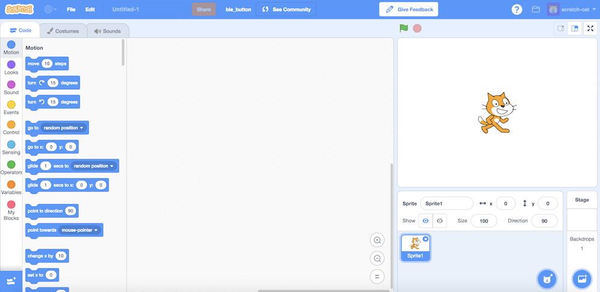
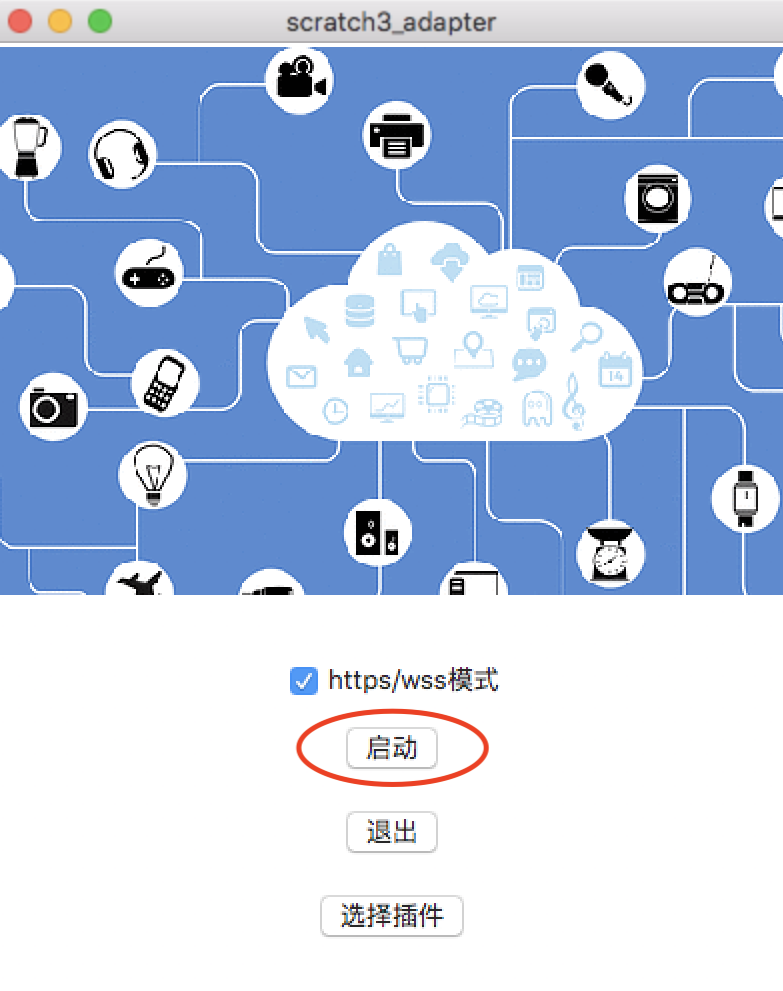
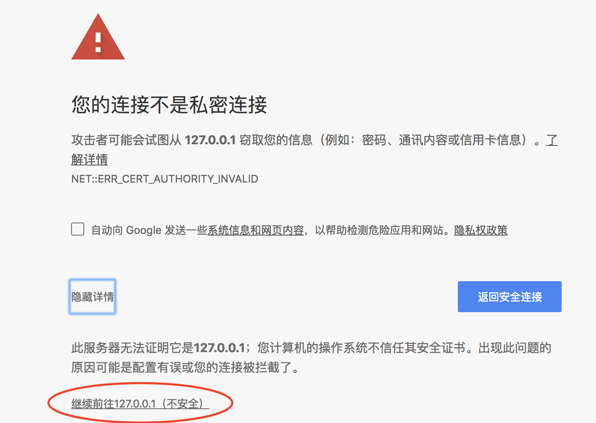
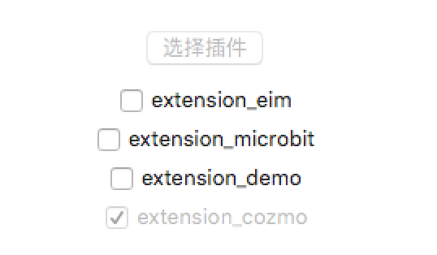
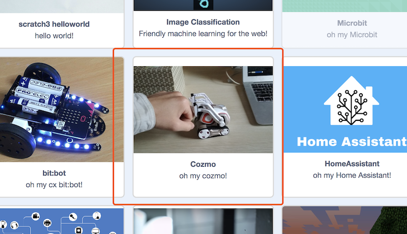
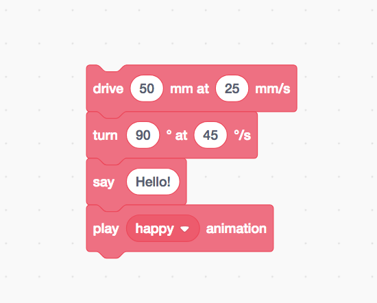

Cozmo
Cozmo社区有好几个帖子在讨论能否让Cozmo在电脑上运行，诸如Run code Lab on computer?
Cozmo社区里有人尝试使用blockly在电脑里控制cozmo:cozmo-blockly。源码比较复杂，我之前在Mac上一直无法成功run起来(在Windows下倒是成功了)
使用scratch3_adapter，我们可以轻松将Cozmo接入scratch3.0中
原理
为了让电脑连上Cozmo，我们需要利用Cozmo官方发布的Cozmo Python SDK,具体的配置方法官方已经给出:Initial Setup，根据你的手机和电脑的不同，做相应配置
在继续阅读操作之前，先确保把官方hello world的demo run起来
使用插件
前三个步骤和micro:bit完全相同，依次为:
步骤1: 打开Scratch3 Lab
推荐使用Chrome浏览器点击打开Scratch3 Lab，目前Scratch官方团队在目录支持更多浏览器版本，现阶段使用Chrome浏览器效果最佳
目前Scratch3 Lab的服务器在香港，第一次加载，你需要耐心等待一段时间(之后打开就快了)

步骤2: 打开scratch3_adapter
双击打开scratch3_adapter，点击启动

步骤3: https检验(只需要验证一次)
如果你是第一次使用scratch3_adapter，则需要点击scratch3_adapter菜单栏中的https检验

在自动打开的页面里依次点击高级 > 继续前往127.0.0.1（不安全）

步骤4: 运行cozmo server
cozmo server是一个独立的进程，打开一个命令行窗口把它run起来(依赖于Cozmo Python SDK，建议就在你刚才运行hello world的demo的地方运行它)
wget https://raw.githubusercontent.com/Scratch3Lab/scratch3_adapter_extensions/master/src/cozmo_server.py
python cozmo_server.py
ps: 架构层面，尽管我们也可以在extension_cozmo中直接控制cozmo。但scratch3_adapter基于zeromq，在zeromq的世界里，鼓励创建连接程序的管道,而不是使用多线程把他们揉在一起。这种方式轻便灵活，多个进程之间使用消息而不是锁来协同。我们已经爱上了这种风格：）
步骤5: 加载scratch3_adapter的cozmo插件

步骤6: 在scratch3 lab运行积木!
选择对应的scratch3插件: Cozmo

接着选择积木，点击运行

后记
由于时间有限，我们目前只为cozmo制作了几个积木块(和官方code lab中的几乎一模一样!)，如前头说的，如果你愿意，你可以自行扩展它，将cozmo更多的技能包装为积木，时间充裕的话，完全能够做到和官方的app一样丰富！